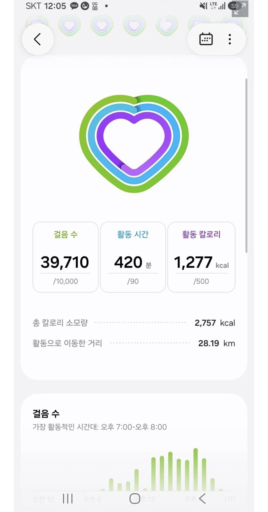

소개로 만난 여친이 산책을 좋아한다했다 ㅅㅂ.jpg
댓글
?
김정호가 아니고?
일본여행 노가이드로 발 팅팅 붓게 걸어다녀야 삼만보인데 ㅋㅋㅋㅋ
산책의 악마
배우자 로서 진짜 개추야
개인적인 생각이지만 결혼할때
체력 좋은 여자가 좋음
체력 좋은 여자는 기분 변화가 적고 스트레를 다른사람에게 해소 하는 경향이 적음
체력없고 뚱뚱한 사람은 대부분 스트레스에 취약하고 남탓을 잘하는 경향이 있더라
레알 ㅋㅋ 체력이 되야 스트레스가 덜 쌓임 ㅋ 이건 육아 뿐 아니라 직장생활, 인간관계에서도 유효함.
내가 러닝 시작하기 전에는 매사 의욕도 없고 신경질적이였는데 러닝하니까 스트래스도 다 풀리고 또 체력도 좋아져서 여유가 생기더라.
여자는 여러가지 이유로 거기서 거기임
남자끼리 사는거 좀 별론데
군대에서 같이 살아보니까 좀 그래
아니더라....
육아 스트레스는 별도의 영역이드라.
20대 육아랑 30대 -40 대육아는 하늘과 땅차이야
근데 저정도면 시간아깝지않나...?
저 여친한테는 저 산책이 데이트인거임
저게 저 사람만의 데이트인거지
키로수가 과하긴 한데 건강해지고 좋지 뭐 ㅋㅋㅋ
카페에서 떠드는 것을 밖에서 하는 거긴 한데.. 근데 어쩌다도 아니고 매번 20km는 ㅋㅋ
잘걷는 나는 극호 ㅋㅋㅋ
허스키야?
저정도면 허스키도 주인 유기하고 도망감
'이 여친을 사귀려면 하루 10km씩은 걸어야해요'
저정도면 보더콜리쯤 되야 버티고 살수 있을거 같은데
4만보는좀ㅌㅋㅋㅋㅋㅋ 그러다 잠만보되겠다
나도 걸어다니는 편인데 저정도면 시간이 너무 ㅋㅋ
체력 좋으면 정신건강도 좋더라
진지하게 저정도면 오히려 해로울듯
너 보더콜리된거야
부럽다 계속같이 있고싶을만큼 두근거리니까 420분 동안 걸은거겠지
누가 산책을 4만보를해 ㅋㅋㅋㅋㅋ
하.. 시발 ptsd 올라온다..
난 피로골절이라는걸 연애하면서 처음 겪었었다.
신발 좋은거 신어야겠는데 ㅋㅋㅋㅋ
나도 걸으면서 여행하는걸 진짜 좋아하는데
하루 4만보가 아니라 산책 4만보는 쉽지않네
아니 자유여행갔냐고 ㅋㅌㅋㅋㅋㅋㅋㅋㅋㅋㅋㅋㅋ
건강해지겠어
내 이상형인데 나도 걷는 거 개조아함
건강도 생각해주고 ㅈㄴ 좋은 여친이잖아...
20키로면 행군이지
군가 부르면서 같이 행군 으쌰으쌰하면 전우애 쌓일 듯
여친: '이새끼가 대체 얼마나 더 걸어야 쉬었다 갈래?하고 말을 꺼낼까 븅신새끼 존나 힘드네!'
운동 좋아해서 저런거 좋다,
살짝 조깅으로 하면 더 좋을듯
나도 산책 좋아하긴 하는데 하루에 한 만 오천보 정도가 적당한거 같음
28km면 차라리 마라톤 뛰는게 더 편할듯
이야 이거는 좀
오늘 23km뛰고 왔는데 2시간 좀 넘게 나옴 걸으면 도대체 몇시간 걸리는거야 ㄷㄷㄷ
28키로를 걸으면 뭐 자정까지 걸었나?
내가 다이어트할 때 4만보 넘게 걸은날도 있는데
보통 1시간에 7천보 걸으니
6시간정도는 걸어야 저정도 됨
여자들중에 저런 사람들이 꽤 있나
전여친도 걷는거 존나 좋아했는데 (사실 좋아한다기보단 걍 그게 일상이고 당연한 느낌이었음) 혼자서 너댓시간씩 막 돌아다니기도하고 지하철 네정거장정도는 무조건 걸어간다고 생각을 했음...
전생에 정약용이었나 ㅋㅋㅋㅋ